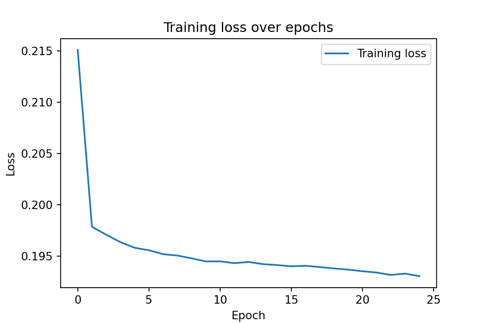
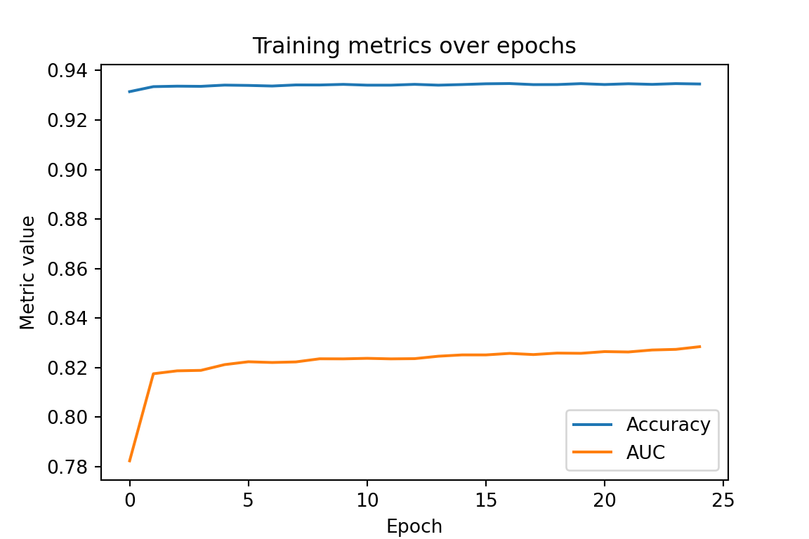

Output layer: Sigmoid maps predictions to probabilities in ([0,1]) for binary classification.
Loss: Binary cross-entropy aligns with Bernoulli likelihood and probabilistic outputs.
Metrics: Accuracy can be misleading with imbalance; AUC, precision, recall, F1 add nuance.
Data & target
Target:SeriousDlqin2yrs — whether serious delinquency occurred within 2 years (0/1).
Features: 10 standardized numeric predictors (after cleaning and dropping the ID column).
Show the code
# Core data handlingimport os # file pathsimport numpy as np # numeric arrays, vectorized opsimport pandas as pd # dataframes, CSV I/O# Model selection & preprocessingfrom sklearn.model_selection import train_test_split # train/test split with stratifyfrom sklearn.preprocessing import StandardScaler # feature standardization (fit on train only!)# Deep learning (Keras/TensorFlow)import tensorflow as tffrom tensorflow.keras import Sequential # simple stack modelfrom tensorflow.keras.layers import Dense, Input # fully connected layersfrom tensorflow.keras import metrics # ready-made metrics: AUC, Precision, Recall, F1
Data preprocessing
Before training, we need to prepare the dataset:
Remove rows with missing values.
Separate features (X) from the target (y = SeriousDlqin2yrs).
Split into training and test sets (keeping class balance with stratify).
Standardize features so each has mean 0 and variance 1 — this helps the neural net train smoothly.
Show the code
def preprocess_data(df):""" Clean, split, and scale the dataset for classification. """# 1) Remove rows with missing values df = df.dropna()# 2) Separate features and target X = df.drop("SeriousDlqin2yrs", axis=1) y = df["SeriousDlqin2yrs"]# 3) Train/test split with stratification to preserve class ratio X_train, X_test, y_train, y_test = train_test_split( X, y, test_size=0.3, random_state=42, stratify=y )# 4) Standardize features scaler = StandardScaler() X_train_scaled = scaler.fit_transform(X_train) X_test_scaled = scaler.transform(X_test)return X_train_scaled, X_test_scaled, y_train, y_test
Show the code
# Path to the dataset (inside Documents/BOI_DL_website/data)data_path = os.path.join( os.path.expanduser("~\\Documents\\BOI_DL_website"),"data\\credit_data.csv")# Load raw datasetraw_df = pd.read_csv(data_path)# Apply preprocessing: clean → split → scaleX_train, X_test, y_train, y_test = preprocess_data(raw_df)
Model architecture & training setup
We’ll build a small MLP (multi-layer perceptron):
Input (10 features): matches the scaled columns produced in preprocessing.
Hidden layers:Dense(60, ReLU) → Dense(5, ReLU)
ReLU speeds up training and handles nonlinearity well.
Width 60 then 5 is a compact architecture suitable for tabular credit data.
Output:Dense(1, Sigmoid) gives a probability for the positive class.
Loss:binary_crossentropy (standard for binary classification).
Optimizer: Adam with learning rate 1e-3 (robust default).
Metrics: accuracy + AUC, precision, recall, F1 for a fuller picture on imbalanced data.
Training: 25 epochs, batch size 32.
Instead of updating weights after every single example (which would be noisy and slow) or after the entire dataset (which would be memory-heavy and inefficient), we train in mini-batches:
Each epoch, the training data is split into groups of 32 samples (mini-batches).
For each mini-batch, the model computes predictions, calculates loss, and performs a weight update.
This balances stability (less noisy than 1-sample updates) with efficiency (faster than full-dataset updates).
The multi-layer neural network used in this tutorial. It takes 10 standardized input features, passes them through two hidden layers (60 and 5 neurons with ReLU activations), and produces a single sigmoid output that represents the probability of default.
Show the code
# Define a simple feed-forward network for binary classificationmodel = Sequential([ Input(shape=(10,)), # Input vector of length 10 (scaled features) Dense(60, activation="relu", kernel_initializer="uniform"), # Hidden layer 1: 60 units + ReLU Dense(5, activation="relu", kernel_initializer="uniform"), # Hidden layer 2: 5 units + ReLU Dense(1, activation="sigmoid") # Output: probability of positive class])# Compile with binary cross-entropy and a useful metric set for imbalancemodel.compile( optimizer=tf.keras.optimizers.Adam(1e-3), # Adam with lr=0.001 loss="binary_crossentropy", # Suitable for sigmoid output metrics=["accuracy", metrics.AUC(name="auc"), metrics.Precision(name="precision"), metrics.Recall(name="recall"), metrics.F1Score(name="f1") # Requires TF >= 2.11 ])# Train the modelhistory = model.fit( X_train, y_train, epochs=25, # training passes over the dataset batch_size=32, # mini-batch size# validation_split=0.2, # (Optional) hold out 20% of train for validation curves# callbacks=[es], # (Optional) add early stopping verbose=0)
Model evaluation
After training, we test the model on the held-out test set.
The evaluate function returns the loss and all metrics we specified in compile (accuracy, AUC, precision, recall, F1).
Presenting them in a clean, rounded format makes the results easier to interpret.
Show the code
# Evaluate on the test set and return metrics as a dictionarytest_metrics = model.evaluate(X_test, y_test, verbose=0, return_dict=True)# Format nicely: metric name + rounded valuefor key, value in test_metrics.items():print(f"{key:<10}: {value:.2f}")
accuracy : 0.93
auc : 0.82
f1 : 0.13
loss : 0.20
precision : 0.54
recall : 0.19
Training history
Looking at metrics across epochs helps us understand model behavior:
Loss curve: should generally decrease; if it rises again, the model may be overfitting.
Accuracy / AUC curves: should increase and stabilize.
Precision/recall tradeoff: sometimes one rises while the other falls; looking at both is important.
Plotting the training history gives a clear picture of how the network improves during training.
Show the code
import matplotlib.pyplot as plt# Convert training history to a DataFrame for easy plottinghistory_df = pd.DataFrame(history.history)# Plot lossplt.figure(figsize=(6,4))plt.plot(history_df["loss"], label="Training loss")plt.title("Training loss over epochs")plt.xlabel("Epoch")plt.ylabel("Loss")plt.legend()plt.show()

Show the code
# Plot accuracy and AUCplt.figure(figsize=(6,4))plt.plot(history_df["accuracy"], label="Accuracy")plt.plot(history_df["auc"], label="AUC")plt.title("Training metrics over epochs")plt.xlabel("Epoch")plt.ylabel("Metric value")plt.legend()plt.show()

Appendix: Metrics & Formulas
This page reports binary classification metrics computed on a held-out test set.
Let TP, FP, TN, FN be counts from the confusion matrix at a threshold \(t\) (often \(t=0.5\)).
Let \(y_{i} \in \{0,1\}\) be the true label and \(\hat{p}_i \in [0,1]\) the model’s predicted probability for the positive class.
Binary Cross-Entropy (Log Loss)
Measures the quality of probabilistic predictions (lower is better): \[
\text{BCE} = -\frac{1}{n}\sum_{i=1}^{n}\Big[y_i \log(\hat{p}_i) + (1-y_i)\log\big(1-\hat{p}_i\big)\Big].
\]
Threshold-free measure of ranking quality (higher is better).
- ROC curve: plot \(\text{TPR}=\frac{TP}{TP+FN}\) vs. \(\text{FPR}=\frac{FP}{FP+TN}\) as \(t\) varies.
AUC is the area under the ROC curve and equals the probability a random positive is ranked above a random negative: \[
\text{AUC} = \Pr\big(\hat{p}^+ > \hat{p}^-\big).
\]
Practical Notes
Threshold choice ((t)) trades precision vs. recall; tune (t) to business costs or by maximizing a metric (e.g., F1) on validation data.
Imbalanced data: rely less on accuracy; prefer AUC, PR curves, F1, and class-specific error analysis.
Calibration: well-calibrated \(\hat{p}\) improves decision-making when costs vary